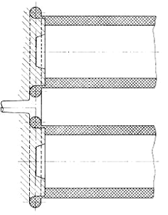
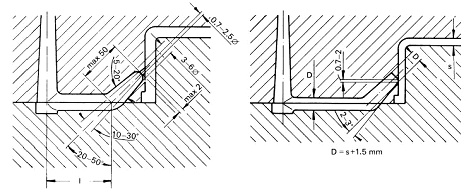
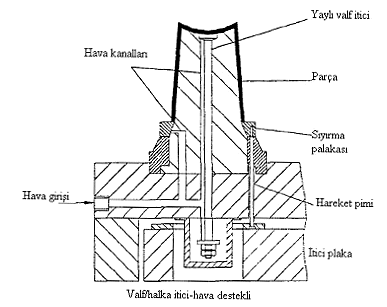

3.5 Yolluk Giriþlerinin Tasarýmý
Kavite giriþleri (giriþ) kaviteyi (ya da parçayý) yolluða baðlar. Genellikle tüm sistemin en ince bölümüdür. Boyutu ve yeri çeþitli gereksinimler göz önüne alýnarak belirlenir. Giriþin yerini, þeklini ve boyutunu belirleyen faktörler aþaðýda belirtilmiþtir. Genel olarak giriþ küçük, kalýplanmasý basit ve parçadan kolayca ayrýlabilecek þekilde olmalýdýr. Parçaya, onu distorsiyona uðratmayacak ve görünüþünü bozan izler býrakmayacak þekilde baðlanmalýdýr.
Giriþin parça üzerindeki yeri bu yüzden özel bir önem kazanmaktadýr.
Tablo 2 Kavite Giriþlerini Etkileyen Faktörler
Giriþ çeþitli konfigürasyonlardan herhangi birine sahip olabilir. Nokta giriþ veya kenar giriþ þeklinde olabilir. Ýleride daha detaylý olarak anlatýlacak olan yolluk giriþi ile ayný olan direk giriþ þeklinde özel bir formda olabilir. Bu durumda giriþ sistemin en dar noktasý olmaz ve parçadan ayrýlmasý için ilave bir kesme iþlemi gereklidir.
Bütün diðer giriþ türleri sisteme birtakým kýsýtlamalar getirirler ve sistem kolay kalýplama ve ayrýlma yönünden gerçekleþmesi daha zor bir hal alýr. Malzeme, yolluklar yada giriþler gibi dar kanallarda akarken, akýþa karþý ciddi bir dirençle karþýlaþýr. Enjeksiyon basýncýnýn bir kýsmý bu direnci yenmek için kullanýlýr ve ergimiþ malzemenin sýcaklýðý fark edilebilecek bir þekilde artar. Bu çok istenen bir durumdur çünkü;
• Kaviteye giren ergimiþ malzeme daha akýþkandýr ve kaviteyi daha iyi doldurur,
• Giriþ civarlarýndaki malzeme ýsýndýðý için giriþteki donma gecikir.
Optimum giriþ boyutlarý malzemeyi ýsýl olarak hasara uðratmayacak ve çok yüksek basýnç kayýplarýna neden olmayacak þekilde olmalýdýr.Giriþ boyutlarý hesaplama ile veya deneme baskýsý sýrasýnda deneme yoluyla saptanýr. Bu esnada yolluklar da dengelenebilir. Bunun anlamý her giriþin ergimiþ malzemenin kavitelere ayný zamanda girmesini saðlayacak þekilde yapýlmasýdýr. Bu þartýn önemi aþaðýdaki þekillerde gösterilen hatalý üretilmiþ parçalarda kolaylýkla görülebilir. Pratikte özellikle çok kaviteli kalýplarda giriþler önce gereðinden küçük yapýlýr. Daha sonra denemeler esnasýnda elde edilen verilerle giriþler bütün kaviteler üniform olarak dolana kadar geniþletilir. Bu iþlem oldukça fazla uzmanlýk ve mekanik üretim yeteneði gerektirmektedir. Bu zaman alýcý iþlem günümüzde yerini yolluk sisteminin boyutlarýnýn hesaplama ile bulunmasý yöntemine terk etmiþtir. Bu durumda bütün giriþler ayný boyutta olmaktadýrlar.
Aþaðýda giriþlerin uygun yerlerini ve boyutlarýný göstermektedir. Giriþ dairesel, yan dairesel veya dikdörtgensel þekilde olabilir. En uygun olaný dikdörtgensel olanýdýr.
Kalýptan en kolay ayrýlabilen ise yarý dairesel olandýr.
Þekil 39 Giriþ kesitleri ve yolluk üzerindeki pozisyonlarý
Giriþin yolluða en iyi þekilde baðlanýþý da yine ayný þekilde gerçekleþmektedir. Bu baðlantý tek baþýna kalýbýn dolmasý süresince kavite içindeki, en iyi akýþ karakteristiðini saðlamaz.
Bazý plastiklerde donmuþ olan yüzey tabakasý yerinden koparak kavite içine taþýnýr ve parçada istenmeyen izlere neden olur. Ergimiþ plastik kavite içine jet halinde de girmemelidir ancak giriþ orifisinden baþlayarak kaviteyi üniform þekilde doldurmalýdýr. Jet halinde kaviteye giren malzeme, arkasýndan gelen malzeme tarafýndan tekrar ergitilemediði için, parçanýn görünümünü bozan izlere neden olur. Kritik olmayan hallerde geçiþ bölgesinde yapýlacak olan bir geçiþ yarýçapý bu etkiyi azaltacaktýr.
Nokta ve tünel giriþler için ise önerilen boyutlar aþaðýdaki þekilden bulunabilir.
Daha önceden de bahsedildiði gibi giriþin boyutlarý kalýplanacak malzeme ve parçanýn kesit kalýnlýðý tarafýndan belirlenir. Daha büyük viskoziteli ve daha kalýn kesitli parçalarda daha büyük giriþ kullanýlýr. En kalýn kesit giriþ boyutunu belirlediði için giriþin buraya konulmasý tek mantýklý çözümdür. Eðer giriþ en kalýn kesitten yapýlmazsa parçada boþluklar ve çökme izleri meydana gelir. Bunun nedeni giriþ bölgesinin gereðinden önce dolmasýndan dolayý tutma basýncýnýn etkime süresinin çok kýsa olmasýdýr.
Þekil 40 Nokta (solda) ve tünel (saðda) giriþler için önerilen boyutlar
Parçanýn kalitesi de giriþin parça üzerindeki yeri tarafýndan belirlenir. Bu konu bir sonraki bölümde ele alýnacaktýr.
Giriþin pozisyonu kavite içindeki malzeme akýþýnýn doðrultusunu tespit eder. Akýþ
doðrultusundaki fiziksel özellikler ve çekme çoðu durumda akýþa dik doðrultuda olanlardan farklýdýr. Bu durum moleküllerin oryantasyonundan kaynaklanmaktadýr. Bu oryantasyonu derecesi özellikle ince cidarlý parçalarda daha fazladýr. Çekme ve kýrýlma dayanýmlarý için en iyi deðerler akýþ yönünde aide edilirken, akýþa dik doðrultuda tokluðu azalýp ve gerilmelerden dolayý meydana gelen çatlak oluþumu eðilimi artar. Aþaðýdaki þekiller farklý giriþ yerlerinin akýþ yolunu ve parçanýn dayanýmýný nasýl etkilediðini göstermektedir.
Kalýp yapýlmadan önce parça üzerindeki yüklemelerin ve asal gerilmelerin saptanmasý
gerekir. Bu durum elyaf takviyeli malzemeler için daha da önemlidir çünkü elyaflar parçanýn maruz kaldýðý maksimum çekme gerilmesi ile ayný doðrultuya sahip olmalýdýr. Takviye olarak kullanýlan elyaflar ancak bu doðrultuda gerektiði gibi yük taþýyabilirler. Takviye edilmemiþ yüksek viskoziteli malzemelerde çekme, oryantasyon yönü ile ayný yönde olur
Eðer elyaf takviyeli malzemelerde akýþa dik doðrultuda bir oryantasyon varsa parçada
distorsiyonlar oluþur. Ancak bu durum olayýn sadece bir yanýdýr.
Þekil 41 Ergimiþ malzemenin deðiþik pozisyonlardaki giriþlerde izlediði akýþ yolu
Þekil 42 Uzun kenarda konumlandýrýlmýþ giriþ
Þekil 3.20’te görüldüðü üzere moleküler oryantasyon akýþ yönüne diktir C-D kesitindeki
mekanik dayaným A-B kesitindekinden fazladýr.
Þekil 43 Kýsa kenarda konumlandýrýlmýþ giriþ
Þekil 3.21’da moleküler oryantasyon akýþ yönüne diktir. A-B kesitindeki mekanik dayaným C-D kesitindekinden fazladýr.
Þekil 44 Parça kalitesi üzerinde giriþ pozisyonunun etkisi
Öte yandan ergimiþ malzemenin farklý taraflardan akarak birleþtiði yerlerde kaynak hatlarý oluþur. (Þekil 3.22). Bunlar her zaman görünüþ bozukluklarýna yol açarlar ve likid kristal yapýdaki malzemelerde veya elyafla takviye edilmiþ malzemelerde mekanik olarak çok zayýf bölgelerdir. Kaynak hatlarýna daha yakýn giriþlerde malzeme daha sýcak olacaðýndan daha iyi bir birleþme meydana gelir. Bu durum özellikle dolmanýn devam ettiði veya tutma basýncý altýnda birleþme bölgesinden malzeme akýþýnýn devam ettiði durumlar için geçerlidir. Bu durumda mekanik özellikler daha iyi olacaktýr.

Þekil 45 Deliklerin ve kanallarýn ardýnda oluþan birleþme hatlarý
Büyük yüzey alanýna sahip veya yanal federleri olan parçalarda üniform soðuma ve ayný anda ergimiþ malzemenin homojenliðini arttýrmak için parçanýn bir kenarýndan diðerine birden fazla giriþ yerleþtirilebilir. Eðer birleþme hatlarý ve giriþler arasýndaki mesafe kýsa ise birleþme daha iyi olacak ve parça bir bütün olarak daha uygun özelliklere sahip olacaktýr.
Þekil 46 Çoklu nokta, kenar giriþler ve eþit akýþ boylan prensibi
Yukarýdaki þekil bu duruma ait örnekleri göstermektedir. Kolay ve muhtemelen otomatik olarak parçadan ayrýlabilen çoklu nokta giriþ genellikle tercih edilir. Öte yandan kenar giriþ bu tür parçalar için daha iyi özellikler saðlar.
Direkt giriþ en basit ve en eski giriþ çeþididir. Dairesel bir kesite sahiptir, kesiti gittikçe artar ve en büyük kesitine ulaþtýðý yerde parça ile birleþir. Direkt giriþ, parçanýn her zaman en kalýn kesitinde olmalýdýr. Uygun boyutlarda yapýldýðýnda parçanýn katýlaþmasý süresince tutma basýncý etkin olur ve hacimsel çekmenin kompanze edilmesi için kalýp içine katýlaþma süresince ilave malzeme transfer edilebilir. Bu durumda parçada boþluklar ve çökmeler meydana gelmez.
Þekil 47 Direkt giriþ
Yolluk giriþinin iki þekilde elde edilebileceði akýlda tutulmalýdýr. Eðer bir yolluk burcu
kullanýlacak ise parçada engellenmesi çok zor olan bir iz býrakacaktýr. Eðer bu istenmiyorsa, bu dezavantajý ortadan kaldýrabilmek için yolluk giriþi doðrudan sabit kalýp plakasýna açýlýr.
Þekil 48 Yolluk burcu kullanýlan (solda) ve yolluk giriþi kalýba iþlenen (saðda) yolluk giriþi
Kenar giriþ öncelikle geniþ yüzeylere ve ince et kalýnlýklarýna sahip parçalarda kullanýlýr.
Aþaðýda sayýlan avantajlara sahiptir.
- Bütün parça geniþliði boyunca paralel oryantasyon (özellikle optik parçalar için önemli)
- Her durumda akýþ doðrultusunda ve yanal doðrultuda üniform çekme
- Parça yüzeyinde istenmeyen giriþ izlerinin bulunmamasý.
Yolluk giriþini terk eden ergimiþ malzeme önce kaviteyi dar bir kýsým ile yolluk sistemine baðlayan ilave daðýtýcý kanala girer. Bu dar kesitli bölge kalýbýn dolmasý süresince bir boðaz görevi görür. Böylece malzeme kaviteye girmeden önce kanal malzeme ile dolar.
Bu tür bir boðazýn geniþliði viskozite deðiþtiðinde modifiye edilebilmelidir.
Daðýtýcý kanal genellikle dairesel bir kesite sahiptir. Aþaðýdaki þekildeki
baðýntýlar boyutlarý belirler. Bu boyutlar kenar giriþin bir varyantý olan ve daha sonra
bahsedilecek olan halka giriþin boyutlarý ile mukayese edilebilir.
Þekil 49 Dairesel daðýtým kanallý kenar giriþ
Dairesel kanalýn yaný sýra bazen balýk kuyruðu þeklinde bir kanal ile de karþýlaþýlabilir. . Bu þekilde bir giriþ daha fazla iþçilik ve daha fazla malzeme sarfiyatý ile birlikte kavite içinde plastik malzemenin paralel olarak akmasý sonucu beraberinde mükemmel bir parça kalitesini de getirmektedir.
Þekil 50 Üniform akýþ hýzý için ayarlanmýþ kenar giriþ
Disk giriþ silindirik parçalarýn tüm kesitlerinin üniform þekilde dolmasýný saðlayan bir giriþtir.
Disk düzlemsel bir daire þeklinde veya 45° lik tepe açýsýna sahip bir koni (þemsiye giriþ) þeklindedir ve ergimiþ malzemeyi parçanýn en büyük çapý üzerinden bütün parçaya yayar. Böylece parçadaki birleþme hatlarýnýn oluþumu dezavantajý ortadan kalkar. Eðer parça giriþi birkaç yerden yapýlmýþsa bu hatlarýn oluþmasý engellenemeyebilir. Bunun yaný sýra disk giriþ ile olasý distorsiyonlardan da kaçýnýlmýþ olur.
Þekil 51 Disk giriþler
Þemsiye giriþ parçaya direk veya bir geçiþ kýsmý ile baðlanabilir. Hangi türün seçileceðine parçanýn cidar kalýnlýðýna bakýlarak karar verilir. Diskin tasarýmý yukarýdaki de gösterildiði gibi diskin yerine göre deðiþir. Böylece disk giriþ çýkýntýlarý veya girintileri olan silindirik parçalarýn maça olmadan kalýplanabilmesine izin verir.
Þekil 52 45° açýlý disk giriþ
Halka giriþ uzun olduklarý için her iki taraflarý da çekirdek tarafýndan desteklenen uzun silindirik parçalarýn kalýplanmasýnda kullanýlýr.
Ergimiþ malzeme yolluk giriþinden sonra parçaya ince bir kanal ile baðlanan ana kanala girer. Ýnce kanal dar bir kesite sahiptir ve kalýbýn dolmasý süresince bir boðaz görevi görür. Böylece, boðazdan geçerek kaviteye ulaþan malzeme önce ana kanalý doldurur. Halka giriþ içinde bir birleþme hattý olmasýna raðmen bu birleþme hattýnýn etkisi boðazýn ince kesiti tarafýndan sýnýrlanarak kompanze edilir ve birleþme hattý ya çok zor fark edilir yada hiç fark edilmez.

Þekil 53 Halka giriþ ve çekirdek destekleri
Bu giriþin özel avantajý parçayý oluþturan çekirdeklerin her iki uçtan da desteklenmesine olanak saðlamasýdýr. Bu durum göreceli olarak uzun (boy/çap oraný 5/1 den büyük olan) silindirik parçalarýn cidar kalýnlýðý sabit kalarak kalýplanabilmesini saðlar. Halka giriþ silindirik parçalarýn kalýplandýðý birden fazla kaviteli kalýplarda da kullanýlýr. Disk giriþ de tasarým olarak halka giriþe benzemesine raðmen ne kalýbýn çok kaviteli olmasýna ne de çekirdeklerin her iki uçtan desteklenmesine izin verir. Halka giriþin boyutlarý kalýplanan plastiðin türüne, parçanýn aðýrlýðýna, boyutlarýna ve akýþ boyuna baðlýdýr. Aþaðýdaki þekil dairesel kesitler için genellikle literatürde rastlanan boyutlarý göstermektedir. Halka giriþler aþaðýdaki þekilde gösterildiði gibi farklý türde kesitlere de sahip olabilirler. Bu tür kesitlerin tasarým için gerekli veriler yine ayný þekilde gösterilmiþtir.
Þekil 54 Dairesel kesitli halka giriþ
Þekil 55 Kare kesitli halka giriþ
Yukarýdaki þekillerde (Þekil 8.20) gösterilen halka giriþler literatürde dýþ halka giriþ olarak adlandýrýlýr. Aþaðýdaki þekilde (Þekil 8.21) gösterilen halka giriþ ise iç halka giriþ olarak adlandýrýlýr. Ýki birleþme hattýnýn oluþmasýna neden olan bu tür halka giriþin iþlenmesi daha pahalýdýr ve çekirdeklerin her iki uçtan da desteklenmesi daha kompleks bir hal alýr.
Þekil 56 Ýç halka giriþ
Tünel giriþ öncelikle yandan giriþ yapýlabilecek küçük parçalarýn üretimi için çok kaviteli kalýplarda kullanýlýr. Tek ayýrma yüzeyi olan kalýplar için yolluðu parçadan otomatik olarak ayýrabilen tek giriþ þekli tünel giriþtir. Parça ve yolluk ayýrma yüzeyi üzerinde ayný düzlemdedirler. Yolluk kaviteye yakýn olan bir noktaya kadar açýlý olarak devam eder. Açýlý kýsým konik þekilde daralarak kavite giriþindeki dar kanala baðlanýr. Kavite duvarýna açýlmýþ olan tünele benzeyen kanal kavite ve tünel arasýnda keskin bir kenar oluþturan dar bir açý meydana getirir. Bu keskin kenar parçayý yolluk sisteminden ayýrýr.
Tünel için iki tasarým seçeneði vardýr. Tünel ya bir noktasal giriþ ile parçaya baðlanýr yada keskin köþeli kanalýn bir köþesi kaviteye patlatýlarak oluþan delikten baðlantý saðlanýr. Ýlk halde parçaya geçiþ dairesel, ikinci de ise eliptiktir. Ýkinci bahsedilen tür daha yavaþ soðuduðu için tutma basýncý için daha uzun bir zaman saðlar. Ýþlenmesi de bir pantograf çakýsý ile bir seferde yapýlabildiði için pahalý deðildir.

Þekil 57 Tünel giriþ
Parçanýn kalýptan çýkarýlmasý için parça ve yolluk sistemi hareketli kalýp yansýnda kalmalýdýr.
Bu parça ve yollukta bir girinti yapýlarak gerçekleþtirilebilir. Eðer bir girinti yapmak mümkün deðil de kase þeklinde parçalarda olduðu gibi kalýp sýcaklýk farkýndan yararlanýlarak parça hareketli kalýp yansýnda býraktýrýlabilir. Eðer kesici kenar sabit kalýp yansýnda ise parça yolluk sisteminden kalýp açýlýr açýlmaz ayrýlýr. Ardýndan parça ve yolluk kalýptan çýkartýlýr.
Þekil 58 Otomatik yolluk iticili tünel giriþ
Bu sistem sünek malzemeler için sorunsuz olarak çalýþýr. Kýrýlgan malzemeler için ise kalýbýn açýlmasý süresince oluþan engellenmesi mümkün olmayan eðilmeden dolayý kýrýlma riski vardýr. Bu yüzden yolluk sisteminin kalýn yapýlarak kalýptan çýkarýlma süresince sýcak, dolayýsý ile daha esnek kalmasýnýn saðlanmasý tavsiye edilir.
Þekil 59 Eðri tünel giriþ
Þekil 60 Tünel giriþ ile içten giriþ
3.6. Soðutma Sistemi
Kalýp tasarýmýnda en önemli etkenlerden birisi de yeterli ve uygun kalýp soðutmasýdýr. Bütün plastik enjeksiyon kalýplarýnda, sýcak kalýplar da dahil olmak üzere, kalýbýn diðer bir görevi ergimiþ plastiðin soðumasýný saðlamaktýr. Kalýp tasarýmýnda soðutma sisteminin ayrý bir önemi vardýr. Sýcak kalýpta erimiþ plastik, kolayca akmasýna raðmen, baskýnýn soðuyup kalýptan dýþarý atýlabileceði sýcaklýða düþme süresi uzar. Bunun tersi olarak, soðuk kalýpta erimiþ plastiðin soðumasý çabuk olur, bazý durumlarda kalýbý doldurmadan soðuyup sertleþir. Bu iki durum arasýnda bize en uygun baský süresini elde ederiz.
Hýzlý soðuma proses maliyetini düþürecek, her yerde ayný olan soðuma parça üzerinde oluþan farklý çekmeleri, iç gerginlikleri, kalýp ayýrma problemlerini azaltacak ve ürün kalitesini arttýracaktýr. Kalýp soðutma iþlemi yeterli ve uygun þekilde yerleþtirilecek soðutma kanallarý ile saðlanýr. Bu kanallarýn yerleþimi kalýbýn þekli ile uyumlu olmalý ve oyuk duvarlarýna mümkün olduðu kadar yakýn olmalýdýr. Soðutma kanallarýnýn kalýp yüzeyinden olan uzaklýðý arttýkça ýsý transferinin verimindeazalma olur ve kanallar arasý mesafe arttýkça kalýp yüzeyindeki sýcaklýk daðýlýmý deðiþir.
Þekil 61 Tavsiye edilen kalýp soðutma kanallarý çap ve hatve deðerleri
Tablo 3 Çeþitli malzemelerin enjeksiyon ve kalýp sýcaklýklarý
Tabloda görüldüðü gibi plastik malzemelerin enjeksiyon ve kalýp sýcaklýklarý oldukça geniþ bir aralýkta bulunmaktadýr. Bu sebeple tasarýmcýnýn ve malzeme tedarikçisinin tecrübeleriyle tavsiye ettiði en uygun sýcaklýklar seçilmelidir. Tecrübeli bir kalýp tasarýmcýsý kalýplanan ürüne ait plastik malzemenin fiziksel özelliklerinin ve görünüþünün soðutma sistemine baðlý olarak nasýl deðiþeceðini bilmelidir. Örneðin kalýplanan ürün kýrýlgan veya yetersiz parlaklýkta olmasýnýn sebebi çok hýzlý soðuma veya çok düþük kalýp sýcaklýðý olabilir.
Çok yavaþ soðumada veya kalýp yeterli soðuklukta olmamasý halinde ise üründe istenmeyen kristalleþme gözlenebilir.
Soðutma sývýsý olarak genellikle su kullanýlýr. Kullanýlan suyun kireçli olmasý kalýbýn uzun süreli çalýþmasýnda soðutma kanallarýnýn týkanmasýna yol açabilir. Ayrýca kanal çeperini kaplayan kireç tortusu ýsý transferini olumsuz etkileyecektir. Kalýp çýkýþýnda ýsýnan su kapalý bir çevrim ile soðutma kulesine veya kulelerine gönderilerek kuleler vasýtasýyla sýcaklýðý düþürülür ve soðumuþ olarak tekrar kalýbýn soðutma kanallarý giriþine gönderilir. Bazý plastik malzemelerde ise ABS veya PC gibi kullanýlacak soðutma suyu kalýba girmeden bir ýsýtýcýdan geçirilerek sýcaklýk belli bir seviyeye getirilir. Çünkü kalýbýn saðlýklý çalýþabilmesi için kalýbýn belli bir sýcaklýkta tutulmasý gerekmektedir. ABS ve PC kalýp içerisinde çok çabuk akýcýlýðým kaybettiði için kalýbýn sýcak tutulmasý plastiðin ikisini kolaylaþtýracaktýr.
Su ile soðutmanýn uygun olmadýðý veya su ile soðutmanýn kalýba ve kalýplanan parçaya arar verdiði hallerde, basýnçlý havayla soðutulur. Basýnçlý havayla yapýlacak kalýp soðutma sisteminde basýnçlý hava, kalýp içerisine açýlan kanallarý dolaþarak kalýptan ayrýlýr. Soðutma etkisi, su soðutmalý sisteme oranla daha yavaþtýr. Bu nedenle genellikle et kalýnlýðý az ve kalýp sýcaklýðýnýn çok fazla deðiþmesi gerekmeyen kalýplama iþlemlerinde, basýnçlý havalý soðutma sistemi kullanýlýr.
Enjeksiyon kalýbý, hýzlý ve her yerde ayný olacak þekilde soðutulmalýdýr. Soðutma devresi, bazen soðutma kanalýnýn kalýptaki diðer kanallara yakýn delinmemesi gerektiðinden karmaþýk hale gelebilir. Kalýp plakasýnda birçok delik mevcuttur, örneðin; burç delikleri, itici pim delikleri,lokma delikleri vb. Soðutma kanalýnýn diðer deliklere emniyetli olarak ne kadar yakýn açýlacaðý delinecek soðutma kanalýnýn uzunluðuna büyük ölçüde baðlýdýr. Derin delerken delmenin daima belirlenen yolundan kaçma eðilimi gösterdiði (düz delinmediði) görülür. Genelde 150mm’lik deliklerde kullanýlan kural, soðutma kanalýnýn herhangi bir deliðe 3mm’den daha yakýn delinmemesidir. Daha uzun soðutma kanallarý için bu uzaklýk 5mm’dir. Kalýp tasarýmýnda soðutma ünitesinin de var olacaðý düþünülerek kalýpta bulunacak
komponentlere ve iticilere tolerans verilmelidir veya soðutma devresinde en iyi pozisyonu yakalamak için, dizayn esnasýnda bunu mümkün olduðunca erken planlamak gerekir. Soðutma kanallarý yüzeye uzak olursa gerekli soðuma istenen sürede yapýlamayacaktýr. Eðer soðutma kanallarý yüzeye çok yakýn olursa soðuma süresi azalýr fakat yüzey sýcaklýðý plastiðin akýþkanlýðýný olumsuz yönde etkileyecek þekilde azalmýþ olur ve ürünün yüzey kalitesi kötü olur. Soðutma kanallarýnýn arasýndaki mesafeler yüzeye olan mesafeleri dikkatlice hesaplanmalýdýr. Ayrýca kalýbýn alt ve üst tarafýndaki soðutma da dengeli olmalýdýr çünkü kalýptan çýktýktan sonra farklý sýcaklýkta olan alt ve üst yüzeylerde deformasyon oluþur. Soðutucu kanallarýnýn boyutlarý kanal içerisinde türbülans olacak þekilde tasarlanmalýdýr. Yanlýþ soðutma sistemi parçada çarpýlmalara, iç gerilmeler oluþmasýna, doldurma problemlerine ve parçada izler oluþmasýna sebep olabilir. Ayrýca soðutma sistemi, çevrim süresini etkileyen en önemli parametredir zira kalýpta bekleme süresinin yaklaþýk %80’i soðuma sürecine ayrýlýr.
3.6.3 Soðutma Kanallarýnýn Tasarýmý
Parçada tüm kesitlerde ve özellikle de kritik kesitlerdeki gerekli ýsý akýsýný saðlamak için önemli zorluklarýn aþýlmasý gerekebilir. Ýnce bir kalýp çekirdeði bahsedilen bu zorluklarýn aþýlmasý gereken karakteristik bir örnektir.Artan soðuma zamaný gibi yol açacaðý ciddi sonuçlarýn farkýna varýlmadýðýndan dolayý veya üretimden kaynaklanan sebeplerden dolayý bu tür çekirdekler çok sýk olarak özel bir soðutma önlemi alýnmaksýzýn býrakýlýrlar. Soðuma kalýp gövdesinden çekirdeðin uç kýsmýna doðru olur. Enjeksiyon ve itici zamanlan arasýndaki zamanýn azalmasý ile azalan çekirdeðin soðuma zamaný dolayýsýyla ayrý bir soðutma yapýlmadýðý için çekirdeðin sýcaklýðýnýn artmasý kaçýnýlmaz olur. Parçanýn kalýptan çýkarýlma sýcaklýðýný çekirdek sýcaklýðý olarak tanýmlamak mümkündür. Eðer çekirdeðin tabaný tam olarak soðutulursa, çekirdeðin ucu ile tabaný arasýnda istenmeyen bir sýcaklýk farký oluþur. Çekirdek duvarý ile soðutucu arasýndaki sýcaklýk farkýnýn yüksek olmasý kalýbýn kararlý ýsýl dengeye gelmesini önler bozar..
Tablo 4 Çekirdek soðutma teknikleri
Soðutma borularý sadece çekirdeklerin soðutulmasýnda deðil ayný zamanda soðutma kanallarýnýn delinemeyeceði düz kalýp kýsýmlarýnda da kullanýlýrlar.
Þekil 62 Soðutma borulu bir çok kaviteli kalýp ve soðutma suyu baðlantýlarý
Þekil 63 Çekirdeklerin seri soðutulmasý
Dairesel parçalar için pratikte baþarý ile kullanýlan sistem aþaðýdaki þekilde gösterilmiþtir. Soðutucu merkezden (giriþin tam karþýsý) parçanýn kenarýna spiral bir kanal içinde akar. Bu sistem en sýcak noktada, parça ve soðutucu arasýndaki en yüksek sýcaklýk farkýný saðlar. Soðutucu spiral kanal boyunca akarak sýcaklýðý yükselirken ergimiþ malzeme de akýþ boyundan dolayý ayný oranda soður. Sýcaklýk farký gittikçe azaldýðý için daha az ýsý uzaklaþtýrýlýr. Bu da daha üniform bir soðuma saðlar
Þekil 64 Spiral soðutma kanalýnýn tasarýmý
Þekil 65 Doðrusal soðutma kanallarý (Dairesel parçalar için kötü bir tasarým)
Göreceli olarak daha pahalý bir soðutma sistemi de aþaðýdaki þekilde gösterilmektedir. Soðutma kanalý, soðutucuyu spiral bir kanal içinde merkezden kenara doðru taþýyacak þekilde plakaya oyulmuþtur. Bu sistem maliyetinden dolayý sadece merkezden giriþli kalýplar için uygundur. Merkezden giriþli dikdörtgensel parçalar için diðer soðutma sistemleri de ayný oranda etkilidir ve bunlar maliyet açýsýndan daha avantajlýdýrlar. Sistem kalýp plakasýna delinmiþ kör deliklerden meydana gelmiþtir.
Þekil 66 Dikdörtgensel parçalar için spiral soðutma kanalý tasarýmý
Þekil 67 Ekonomik bir soðutma sistemi örneði
Eðer parça yandan giriþli ise soðutucu da yandan girebilir. Çok kaviteli kalýplarda yüksek kaliteli parçalar her kavite için ayný soðuma koþullarýnýn saðlanmasý ile elde edilebilir. Bunun için de her kavite ayrý olarak soðutulmalýdýr. Kavitelerin ayrý olarak soðutulmasý aþaðýdaki þekilde gösterildiði gibi çok sayýda soðutma devresinin paralel olarak dizilmesi ile elde edilir. Ancak bu tasarým eþit akýþ hýzlarýný tam olarak saðlayamadýðý için ilave kontrollere ihtiyaç vardýr.
Þekil 68 Büyük yüzeyler için farklý soðutma kanallarýnýn paralel diziliþi
Düz parçalarýn soðutulmasý için kullanýlan bütün bu sistemler uygun düzenlemeler yapýlarak kutu þeklindeki parçalarýn kalýplarýnýn soðutulmasýnda da kullanýlabilir. Giriþin yeri soðutma kanallarýnýn þeklini ve seri mi paralel mi olacaðýný belirler.
Þekil 69 Çekirdek soðutulmasýnda kullanýlan paralel soðutma kanallarý
Paralel sistem için bir örnek yukarýdaki þekilde bir buzdolabý çekmecesinin kalýbýnýn soðutulmasýnda gösterilmiþtir. Bu sistem kör ve patlayan delikler delinmesi suretiyle maliyet açýsýndan uygun bir þekilde elde edilebilir. Soðutucunun istenen yoldan akmasý için kaynaklar ve týkaçlar kullanýlmalýdýr. Bu iþlem çekirdekte zayýf yada baþka bir deyiþle tehlikeli noktalarýn oluþmasýna neden olur. Týkaçlar, þeffaf parçalarda izlere sebep olabilirler ve kaynak iþlemi de çekirdekte bitirme iþlemleriyle giderilemeyecek distorsiyonlara neden olabilir. Bu yüzden dikdörtgensel çekirdeklerin soðutulmasý için de daha önce dairesel çekirdekler için kullanýlan ve bir örneði aþaðýdaki þekilde görülen sistem benzeri sistemler önerilmektedir.
Þekil 70 Bir kutu kalýbýnda soðutma sistemi
3.7. Ýtici Sistemi
Plastik ürün kalýp boþluðunda soðuduktan ve kalýp açýldýktan sonra kalýptan çýkarýlmasý gerekir. Bunun için her plastik enjeksiyon kalýplarýnda bir itici sistemi kullanýlýr.
Ýtici mekanizmasýnýn çalýþmasý iki türlü olabilir. Bunlar otomatik itme ve yan otomatik itme sistemleri olarak adlandýrýlabilir. Otomatik itme sisteminde itme olayýnýn baþlamasý ve bitmesi tamamen otomatik olarak operatöre ihtiyaç duyulmaksýzýn olur. Genellikle kalýplarýn otomatik itme sistemiyle çalýþýlmasý tercih edilir. Yan otomatik itme sisteminde ise operatörün her itme çevrimi bittikten emniyet kapýsýný açmak ve kalýp kapanmadan da kapamak zorundadýr
3.7.2 Ýtici Sisteminin Çalýþmasý
Ýtme çevriminde temel kural kalýp açýldýðýnda ürünün itme olayýnýn gerçekleþeceði tarafta kalmýþ olmasýdýr. Eðer ürüne yeterli ve doðru bir þekilde çýkýþ açýsý verilmiþse ürün istenilen tarafta kalacaktýr. Hatta ürünün kalacaðý tararý garanti etmek için kalýbýn uygun yerlerine ter açý verilebilir.
Erkek kalýp plakasý ile diþi kalýp plakasý arasýnda ürünün erkek forma takýlmadan serbestçe düþebilmesi için yereri kadar açýklýðýn bulunmasý þarttýr. Benzer þekilde eðer ürün elle veya robotla alýnacak ise erkek ve diþi plakalarýn bu iþlemi güçleþtirmeyecek kadar birbirlerinden uzaklaþmýþ olmalarý gerekir.
Þekil 71 Kalýp stroku, açýklýk ve ürün yüksekliði
Þekil 75 A da görüldüðü gibi çok az çýkma açýsýna sahip derin ürünlerde ürünün maksimum uzunluðundan daha fazla bir itme uygulanmalýda. B de ise oldukça büyük bir çýkýþ açýsýna sahip ürünün serbestçe düþmesi için daha az. bir açýklýðýn yeterli olacaðý görülmektedir.
Açýklýk miktarý daha az olacaðý için strok da daha küçük olacaktýr. Böylece kalýp daha hýzlý çalýþýr ve çevrim zamaný daha düþük olur. Eðer erkek ve diþi çekirdek lokmalarýnda
birbirlerini hizalamaya veya pozisyonlamaya yardým edecek açýlý bir girinti ve çýkýntý
kullanýldýðýnda strok boyu açýþýz metoda göre artacaktýr. Artýþ miktarý ise diþi taraftaki içe dönük açýlý kýsmýn uzunluðu kadar olur. Bununla her iki durumda da açýklýk mesafesi ayný kalýr. Stroðun çok fazla olmasýnýn çevrim zamanýný uzatmanýn haricinde herhangi bir mahsuru yoktur. Fakat özellikle ürün derinliði veya yüksekliði çok az olan kalýplarda strok mesafesinin mümkün olan en küçük deðerde tutulmasý kalýbýn hýzlý çalýþmasý açýsýndan oldukça önemli bir husustur. Þekil 75 de kalýp stroku ürünün serbestçe düþebileceði kadar açýklýða sahip olmalýdýr. A çýkýþ açýsý az olan ürünün en az kendi boyu kadar açýklýðý olmalýdýr. B çýkýþ açýsý büyük ürünün açýklýðý daha az olabilir. C hizalama açýsýnýn yüksekliði kadar strok artar. D büyük çýkýþ açýsý strok mesafesini azaltýr.
Ýtici sisteminin çok çeþitleri vardýr, fonksiyon ve dizayn olarak. Ýtici metotlarýnýn seçimi genelde bazý faktörlere baðlýdýr. Örneðin,
- Dýþarý atýlacak parçanýn dizaynýna
- Parçanýn estetik görünüþüne
- Üretimin ihtiyaçlarýna
Parçayý ve kalýbý enjeksiyon baský iþlemi için tasarladýðýmýz zaman, itici metotlarýnýn
seçimine dikkat edilmesi gerektiðini göz önüne almalýyýz.
Ýtici pimler ile birlikte itici taþýyýcý plakasý, itici kapak plakasý, stoperler ve geri dönüþ mekanizmasýnýn tamamý itici sistemini oluþturur. Eðer parçaya birden fazla itici pim etkiyorsa bunlarýn hepsinin ayný anda etkimesi gerekir. Bu yüzden bütün iticiler itici taþýyýcý plakasýna monte edilirler ve ayný anda hareket ettirilirler. Diðerlerinden farklý hareket eden bir itici parçada hasara sebep.olabilir.
Ýtici pimler itici kapak plakasýna baðlý olan itici taþýyýcý plakasý üzerinde bulunurlar. Bu plaka bir vidalý baðlantý ile makinenin itici sistemine baðlanýr. Stoperler ise itici plakalarýn çalýþma esnasýnda hareketlerini sýnýrlarlar.
Ýtici pimler kendilerini çalýþtýklarý deliklere göre ayarlayabilmek için itici taþýyýcý plakasý içinde yeteri kadar yanal hareket yapabilmelidirler. Bu her plakanýn iþlem sýrasýnda farklý sýcaklýklara sahip olmasý nedeniyle gereklidir. Plakalar iticiler tarafýndan taþýnmamalýdýr çünkü bu durumda plakalar eðilir ve bu da iticilerin sýkýþmasýna neden olur. Bu nedenle itici plakalar bir merkezleme sistemi ile merkezlenmelidir. Bunun için özel merkezleme pimleri kullanýlabilir.
Þekil 72 Ýtici sistemi
3.7.5. Ýtici Çeþitleri
3.7.5.1 Pimler ve býçaklar
Ýtici pimler, en ucuz itici sistemi sunarlar. Fakat bunlarýn kullanýmý sýnýrlýdýr. Bu
sýnýrlamalardan biri, ufak kesitlerinden dolayý, yüksek miktarda itici kuvveti baskýdaki bir noktaya uygulanýr. Pimin yerleþtirildiði noktadan dolayý parçada bozukluk veya kýrýlma olur, özellikle ince duvarlý parça veya kýrýlgan malzeme kullanýldýðý zaman.
Ýtici pimler.standart kalýp parçasý olarak genelde ucuz olduklarýndan dolayý ve standart format olarak metrik ve parmak ölçü birimlerinde býçak, düz, basamaklý pim olarak Þekil 89 ve 90 da görüldüðü gibi üretilirler.
Þekil 73 Ýtici pim tipleri
Þekil 74 Pim ve býçaklarýn pozisyonu
3.7.5.2 Ýtici bilezik
Ýtici bilezikler, belirli özellikteki parçalarý dýþarý atmak için kullanýlýrlar, örneðin, içi boþ delikler. Ufak yuvarlak parça bir tane itici bilezik kullanýlarak parçanýn çevresinden itilirler, itici bilezik kullanmak, pim kullanmaktan daha pahalýdýr ve kullanýlmalarý esnasýnda bilezik içinde ve dýþýnda sürtünmeden dolayý daha hýzlý eskime eðilimindedir. Standart pimlerle karþýlaþtýrýldýðýnda itici kuvvetler bileziðin daha geniþ kesit alanýna daha düzgün (eþit) þekilde daðýtýlmasý ile birlikte kalýp havalandýrmasýný iki katýna çýkararak daha etkin havalandýrma da saðlar.
Þekil 75 Standart boru formatlarý
Þekil 76 Ýtici boru pozisyonlarý
Valf baþlýklý iticilerin bir çok kullaným alaný vardýr ve bir çok sebepten kullanýlýrlar. Çeþitli valf dizayn iticileri takýlma veya çalýþtýrýlma metotlarýyla birlikte ilgilenilir. Valf iticileri, itici kuvvetlerin transferinde daha geniþ bir izdüþüm alaný sunar. Düz baþlý dizayn ince duvarl parçalarýn dýþarý atýlmalarý sonucu, þekillerinin bozulmadan dýþarý atýlmasýný temin eder. Esnek yumuþak polimerler ve parçalar, örneðin, YYPE þiþe kapaklan, bu tip itici kullanýlarak parçanýn dýþarý atýlmasýna yardýmcý olur. Yüzer valf iticiler dik enjeksiyon baskýda kullanýlabilirler veya melamin kalýpta yer çekimini kullanarak, iticilerin hareketinden sonra tekrar geri dönmesini saðlar.
Þekil 77 Standart valf baþlýklý itici format ve takýlma metottan
Sýyýrma halkasý ve plakasý, parçayý iterek yada çekerek erkek kalýptan dýþarý atar genellikle parça tabanýnýn çevresiyle bu plakanýn kontak kurmasýyla yapýlýr. Parçanýn sýyrýlarak dýþarý atýlmasý esnasýnda, parçaya saðlanan destekle daha az bozulma gösterirler. Bu çeþit enjeksiyon metodunu kullanmanýn bir çok faydasý vardýr, bununla beraber kalýp erkek kýsmýný kaplayan, sýyýrma halkasýnýn boyutlarýnda artmanýn sonucu kalýpta daha yüksek seviyede parça eskimesi oluþur.
Þekil 78 Sýyýrma halkasý ve plakasý

Þekil 79 Hava destekli karýþýk itici metodu
Çeþitli mekanik itici metot kombinasyonlarýna ihtiyaç duyulduðunda, havalý iticiler de
kullanýlýr Hava mekanik itici sistemleri ile ilgili bir çok örnek termoplastik ve kauçuk endüstrisinde bulunur, örneðin, conta, yað keçesi, diyafram vb. Büyük ince duvarlý parçalarýn kalýptan dýþarý atýlmasýnda, büyük izdüþüm alanlarýndan dolayý sýkça hava itici tekniði kullanýlarak, parçaya zarar vermeden kalýptan dýþarý atýlýr.
|